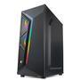
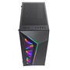
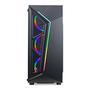
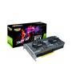
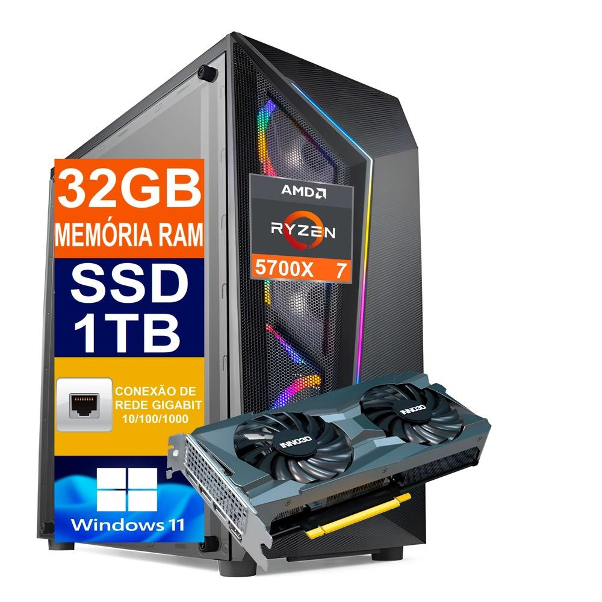

R$ 6.460,91
À vista no PIX com até 9% OFF
R$ 7.099,90
Em até 10x de R$ 709,99 sem juros no cartão
Ou em 1x no cartão com até 9% OFF
Escolha o seu próximo dispositivo digital!
À vista no PIX com até 9% OFF
R$ 7.099,90
Em até 10x de R$ 709,99 sem juros no cartão
Ou em 1x no cartão com até 9% OFF
- Acompanha 3 Ventoinhas na parte Frontal do Gabinete.
- Computador já montado e configurado! Pronto para usar!
- Alta Ventilação / Resfriamento dos Componentes.
- Mais estilo e durabilidade, para seu Setup Gamer!
- Windows 11 Pro 64bits
- Com este computador você poderá jogar diversos jogos da atualidade! NÃO ACOMPANHA JOGOS INSTALADOS, a instalação de jogos deve ser feita pelo usuário de acordo com sua preferência.
ESPECIFICAÇÕES TÉCNICAS:
Conexões e Redes
- Conexão USB (Quantidade): 10
- Conexão USB Placa mãe (Versão): 04 USB 3.0 + 4 USB 2.0
- Conexão USB Painel Frontal do Gabinete (Versão): 02 USB 2.0
- Interfaces (Entradas): DC-in / Entrada USB / Fones de ouvido / Microfone / RJ-45
- Interfaces (Saídas): Displayport e Hdmi
- Entrada de Rede: 10/100/1000 Mbps
- Áudio de alta definição (HD Áudio)
Placa Mãe Modelo: B550M K Gigabyte
A Gigabyte B550 M K é uma placa-mãe altamente confiável e robusta, com uma série de recursos projetados para otimizar o desempenho e a eficiência do seu sistema. Ela suporta uma ampla gama de processadores AMD Ryzen, permitindo flexibilidade na escolha da CPU.
Com suporte para duplo canal ECC/ Não-ECC Unbuffered DDR4, 4 DIMMs, proporciona excelente velocidade e capacidade de memória.
A placa-mãe também está equipada com slot Ultra Durável™ PCIe 4.0 pronto x16 e conectores ultra-rápidos NVMe PCIe 4.0/3.0 M.2, garantindo uma alta velocidade de transferência de dados.
Além disso, possui capacitores de áudio de alta qualidade e proteção contra ruído de áudio para uma qualidade de áudio suprema.
O design inclui uma GbE LAN com gerenciamento de largura de banda, várias saídas de vídeo para suporte multi-display e um Smart Fan 5 com múltiplos sensores de temperatura e headers de ventoinha híbridos para um resfriamento eficiente.
A resistência ao enxofre também garante maior durabilidade e longevidade para o seu sistema.
- Dual channel DDR4 suportando até 128GB
- Slot Ultra Durável™ PCIe 4.0 Pronto x16
- Duplo Conectores Ultra-Rápidos NVMe PCIe 4.0/3.0 M.2
- Capacitores de Áudio de Alta Qualidade e Redução de Ruído de Áudio para Qualidade de Áudio Suprema
- Gigabyte LAN com Gerenciamento de Largura de Banda
- Displayport e HDMI para Suporte Multi-display
- Tecnologia Smart Fan 5 Possui Múltiplos Sensores de Temperatura
- Design de Resistores Anti-enxofre
Memória RAM DDR4: 32GB 3200MHz
SSD M.2 NVMe ultra rápido: 1TB
O SSD M.2 nada mais é que um dispositivo de armazenamento, assim como o HD ou SSD SATA, porém é um chip eletrônico espetado diretamente na placa mãe, inclusive muito mais rápido e eficiente que o SSD SATA! Na prática, estamos falando de computadores ligando em menos de 10s. Realmente é algo que impressiona.
Processador:
- AMD Ryzen 7 5700X 3.4GHz
- Número de núcleos: 8
- Threads: 16
Com esse processador inovador e incrível você desfruta ao máximo o verdadeiro potencial do seu computador e desfruta da mais pura velocidade. Maximize o seu desempenho seja trabalhando, jogando, navegando ou assistindo o seu filme preferido, com esse processador você pode tudo!
Processador AMD Ryzen, uma nova era se inicia! Eficiência energética, desempenho sem precedentes. O processador definitivo para os gamers, entusiastas e produtores de conteúdo! Eleve sua experiência a um patamar nunca visto antes com AMD Ryzen!
Placa de vídeo RTX 3060Ti 8GB
PLACA DE VÍDEO RTX 3060 TI TWIN X2 LHR 8GB GDDR6
THE ULTIMATE PLAY
Com a GeForce® RTX 3060 Ti e a RTX 3060, você pode jogar os games mais atuais usando o poder da Ampere, a 2ª geração da arquitetura RTX da NVIDIA. Obtenha um desempenho incrível com Ray Tracing Cores e Tensor Cores aprimorados, novos multiprocessadores de streaming e memória G6 de alta velocidade.
ARQUITETURA NVIDIA AMPERE
2ª GERAÇÃO
RT CORES
TAXA DE PROCESSAMENTO
2X MAIS RÁPIDA
3ª GERAÇÃO
TENSOR CORES
TAXA DE PROCESSAMENTO ATÉ
2X MAIS RÁPIDA
NOVOS
MULTIPROCESSADORES
DE STREAMING
TAXA DE PROCESSAMENTO FP32
2X MAIS RÁPIDA
RAY TRACING
O Ray Tracing é o santo graal dos gráficos nos games, simulando o comportamento físico da luz para proporcionar uma renderização em tempo real e com qualidade cinematográfica — até mesmo nos games mais visualmente intensos.
Marca: INNO3D
Modelo: N306T2-08D6-119032DH
Núcleos CUDA: 4864
GPU: NVIDIA® GeForce RTX™ 3060 Ti
Interface: PCI-E 4.0 X16
Clock: Boost: 1665 MHz
Base: 1410 MHz
Velocidade de memória: 14 Gbps
Tamanho de Memória: 8GB GDDR6
Interface de memória: 256 bits
Largura de banda da memória: 448 GB/seg
Entradas: 3 x DisplayPort 1.4a
1 x HDMI 2.1
Suporte HDCP: 2.3
DirectX: 12 Ultimate
OpenGL: 4.6
COOLER CPU T200 COOLER MASTER
Características:
- Marca: Cooler Master
- Modelo: RR-T20-20FK-R1
Fonte 700W Reais PFC Ativo com Selo 80 Plus - Bivolt 110V/220V
Uma fonte de alimentação de 700W bivolt automática com selo 80 Plus Bronze é um componente de hardware crucial que fornece energia confiável e eficiente para um computador. Sendo bivolt automática, ela ajusta automaticamente a tensão de entrada entre 110V e 220V, eliminando a necessidade de chaveamento manual, o que a torna extremamente versátil e conveniente para uso em diferentes regiões ou condições de fornecimento de energia.O selo 80 Plus Bronze indica que a fonte de alimentação tem uma eficiência energética de pelo menos 82% em 20% de carga, 85% em 50% de carga e 82% em 100% de carga. Isso significa que menos energia é desperdiçada como calor, economizando eletricidade e contribuindo para a proteção do meio ambiente.
Adaptador Wi-Fi 600Mbps USB Dual Band 2.4GHz e 5GHz
Acompanha cabo de força.